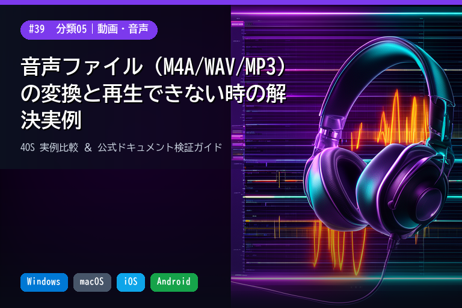

#39｜分類05: 動画・音声・音楽制作 2026-11-23

音声ファイル（M4A/WAV/MP3）の変換と再生できない時の解決実例｜Windows・macOS・iOS・Android
「録音した音声ファイルが再生できない」「WAVファイルの容量が大きすぎてメールで送れない」といったトラブルに直面したことはありませんか？
結論から申し上げますと、Windows、macOS、iOS、Androidのいずれの主要OSにおいても、標準アプリのみを使って「音声形式の変換（M4A→MP3など）」や「WAVファイルの軽量化」を行う機能は備わっていません。 これは故障やバグではなく、OSの仕様による制限です。
この記事では、各OSにおける標準機能の限界を正しく理解した上で、再生できない場合の具体的な解決策や、スムーズな音源制作・共有のための代替手段を徹底解説します。
4OS比較早見表
| 機能 | Windows 11 | macOS | iOS (iPhone/iPad) | Android |
|---|---|---|---|---|
| 標準再生アプリ | メディアプレイヤー | QuickTime Player | ファイル / ミュージック | ファイル管理 / ミュージック |
| 形式変換機能 | 非対応 | 非対応 | 非対応 | 非対応 |
| WAV軽量化 | 非対応 | 非対応 | 非対応 | 非対応 |
| 主な共有手段 | エクスプローラー / クラウド | AirDrop / iCloud | AirDrop / メッセージ | Share Sheet / Googleドライブ |
1. Windows 11 での実例手順
Windows 11では、標準の「メディアプレイヤー」を使用して基本的な再生確認を行うことができます。
公式仕様に基づく実例手順（変換・共有）
- 再生確認: 「メディアプレイヤー」を開き、M4A/WAV/MP3ファイルをドラッグ＆ドロップして試聴します。
- 制限: ファイル形式の変換機能は標準アプリに存在しません。 直接MP3へ変換することは不可能です。
- 共有手順: エクスプローラーでファイルを右クリックし、「共有」またはクラウドストレージ（OneDrive等）へアップロードします。
- 制限: 標準機能では音声のトリミングやフォーマット変更は行えません。
よくあるトラブルと解決法
- M4A ファイルが再生できない場合
- 原因: コーデックドライバの問題、またはファイル自体の破損。
- 解決: 標準アプリでは変換不可のため、まずは「VLC Media Player」等のサードパーティ製プレイヤーで試してください。それでもダメな場合は「FFmpeg」等のツールを使用して再エンコード（修復）を行う必要があります。
- WAV ファイルが容量が大きすぎる場合
- 解決: Windows標準機能では軽量化不可です。「HandBrake CLI」やオンライン変換ツールを使用し、WAVからMP3へ変換してファイルサイズを削減してください。
- 「メディアプレイヤー」で特定の形式が表示されない場合
- 解決: 「設定」>「アプリ」>「既定のアプリ」から拡張子ごとの関連付けを確認してください。標準機能では非対応なため、外部ツール（VLC等）への切り替えを推奨します。
2. macOS での実例手順
Macユーザーにとって馴染み深いQuickTime Playerは強力なツールですが、音声変換に関しては制限があります。
公式仕様に基づく実例手順（変換・共有）
- 再生確認: 「QuickTime Player」でM4A/WAV/MP3を試聴します。
- 制限: QuickTime Playerは動画編集に強いですが、音声ファイルの形式変換機能は標準では非対応です。WAV→MP3の軽量化も不可となります。
- 共有手順: 「AirDrop」や「メッセージ」での直接送信がスムーズです。「写真アプリ」や「iCloudドライブ」への保存のみが可能で、編集なしの状態で管理されます。
よくあるトラブルと解決法
- 「QuickTime Player」で音声ファイルが開けない場合
- 原因: ファイル形式の互換性問題。
- 解決: 標準機能では変換不可です。「VLC for Mac」または「FFmpeg」を使用して、別のコーデックに書き出し直してください。
- WAV を MP3 に軽量化したい場合
- 解決: macOS標準の「音声メモ」アプリは録音専用であり、変換機能はありません。「QuickTime Player」でも出力形式が限定されるため、サードパーティ製ツールでの書き出しが必要です。
- 「共有」時にファイルサイズが大きすぎて送信できない場合
- 解決: 標準機能で圧縮はできません。「iCloud ドライブ」にアップロードしてリンクを共有するか、「VLC for Mac」等で事前にMP3へ変換してからAirDropを行ってください。
3. iOS（iPhone / iPad）での実例手順
iPhoneやiPadでは、メディアの管理方法がPCとは大きく異なります。
公式仕様に基づく実例手順（編集・共有）
- 再生確認: 「ファイル」アプリまたは「ミュージック」アプリで試聴します。「写真アプリ」は音声ファイルを表示しません。
- 制限: iOS標準の「写真アプリ」や「iMovie」では音声ファイルの変換・編集機能がないため、WAV→MP3の軽量化も不可能です。
- 共有手順: 「AirDrop」「メッセージ」「メール」での直接送信が基本です。WhatsApp等のメッセンジャーで送る際、iPhone標準のエディタでは変換できないため、PCで事前に変換するか、サードパーティ製アプリ（Audio Converter等）を使用する必要があります。
よくあるトラブルと解決法
- M4A ファイルが再生エラーになる場合
- 原因: 破損またはコーデックの互換性不足。「ファイル」アプリで開けない場合は、PCでMP3に変換して再度同期させるのが最も確実です。標準機能では修復不可。
- 「写真アプリ」に音声ファイルを保存しようとして表示されない場合
- 解決: iOSの設計上、「写真アプリ」は画像・動画専用であり、音声ファイルは管理対象外です。「ファイル」アプリまたは「ミュージック」アプリを使用してください。
- WAV ファイルを容量小さくしたいが変換メニューがない場合
- 解決: iOS標準機能では非対応です。App Storeで提供されている有料アプリを使用するか、PCからMP3に変換したファイルを転送する手順をとってください。
4. Android での実例手順
Androidは機種（Pixel, Galaxy等）によってアプリ名が異なりますが、基本仕様は共通しています。
公式仕様に基づく実例手順（編集・共有）
- 再生確認: 「ファイル管理」アプリまたは「ミュージックプレイヤー」で試聴します。
- 制限: Android標準の「Google フォト」や「写真エディタ」は画像・動画編集専用です。音声ファイルの変換やWAV→MP3の軽量化は公式アプリで非対応です。
- 共有手順: 「Share Sheet（共有メニュー）」から「Google ドライブ」「メール」「WhatsApp等」へ直接送信します。「写真エディタ」では音声ファイルのトリミング・変換は不可です。
よくあるトラブルと解決法
- 「Google フォト」で音声ファイルをアップロードしても再生できない場合
- 原因: Google フォトは画像/動画最適化のため、M4A等の音声コーデックを強制変換する仕様ではありません。破損ファイルの可能性も高いです。
- 解決: PCで「FFmpeg」などで再エンコードしてMP3にし、再度アップロードしてください。標準機能では非対応です。
- WAV ファイルが容量が大きすぎてメール送信できない場合
- 解決: Android標準のファイル管理アプリでも変換不可です。「Google フォト」内の変換機能も存在しないため、PCやサードパーティ製アプリ（Audio Converter for Android等）でMP3に変換してから共有してください。
- 機種によって「再生できない」というエラーが出る場合
- 解決: 一部の端末ではM4A/WAVのコーデックが非実装の場合があります。標準機能での対応範囲外のため、PCで共通形式（MP3）に変換して転送する手順を推奨します。
よくあるトラブルと解決チェックリスト
| トラブル事象 | 原因の可能性 | 推奨される対処法 |
|---|---|---|
| ファイルを開こうとしてもエラーが出る | ファイル破損、またはコーデック非対応 | PCで「VLC Media Player」や「FFmpeg」を使い再エンコードする。 |
| 変換メニューが見当たらない | OSの標準仕様による制限 | 標準機能に頼らず、サードパーティ製ツール（HandBrake等）を導入する。 |
| WAVファイルが重すぎて共有できない | 圧縮・変換機能の欠如 | PCでMP3へ変換するか、クラウドストレージのリンクを共有する。 |
| 写真アプリに音声が表示されない | OSの設計上の制限 | 「ファイル」アプリまたは「ミュージック」アプリを使用する。 |
まとめ：快適なマルチOS環境を作るポイント
今回の調査で明らかになった通り、Windows/macOS/iOS/Androidのすべての公式標準機能において、「音声ファイルの変換（M4A⇔WAV⇔MP3）」や「高品質なWAV軽量化」は非対応です。これは仕様上の制限であり、ユーザー側で設定を変更して解決できるものではありません。
快適に音声を扱うための推奨ワークフローは以下の通りです：
- 再生確認: まずは各OSの標準プレイヤーでファイルが開けるか確認する。
- 変換・加工: 「変換が必要」「容量削減が必要」と判断した場合は、PCに接続するか、VLCやFFmpegといった信頼性の高いサードパーティ製ツールを使用する。
- 安定性の確保: 特にモバイル端末（iOS/Android）では、PCを介して「ファイル」アプリへ転送する形をとるのが最もエラーの少ない方法です。
また、より高度な音声制作やスムーズな運用を目指すなら、以下の周辺機器やツールの導入も検討の価値があります：
* オーディオインターフェース: PCとマイク/楽器を高品質で接続し、安定した録音環境を構築します。
* 高速外付けSSD: 大容量のWAVファイルを扱う際、PC本体のストレージを圧迫せず高速な読み書きを実現します。
* 動画編集ソフト（Adobe Premiere Pro / DaVinci Resolve等）: 音声のトリミングや高度なエフェクト処理が必要な場合、専用ソフトで一括管理するのが最も効率的です。
* USBマイク: 録音環境を整える第一歩として、高品質な入力ソースを確保することで、後工程での変換トラブルを減らすことができます。
OSの制限を正しく理解し、適切なツールを組み合わせることで、ストレスのないマルチOS環境を実現しましょう。
参考文献・公式ドキュメント（一次情報ソース）
本記事の手順・仕様は以下の各OSおよびツールの公式ドキュメントに基づいています。OSアップデートによりメニュー名称や挙動が変わる場合があるため、最新仕様の確認にもご活用ください。